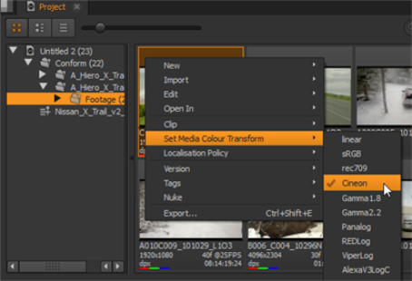
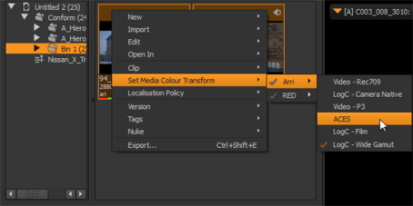

颜色空间的变化适用于垃圾箱和剪辑实例中的剪辑，以及使用 媒体 标签。
要将颜色空间更改应用于垃圾箱中的剪辑:
| 1。 | 在 bin 视图中选择一个或多个剪辑。 |
| 2. | 在选定的剪辑上单击鼠标右键，然后导航到 设置媒体颜色变换 . |

当前的颜色空间用刻度线突出显示。
| 3. | 选择要应用于剪辑选择的颜色空间。 |
注意: 仅显示适用于所选内容的颜色空间。例如, REDspace 和 LogC-相机 仅适用于 R3D 和 arrraw 剪辑。
| 4. | 选择支持不同颜色空间的多种格式，例如 R3Ds 和 arrraw，将可用的 lut 分成子菜单: |

要将颜色空间更改应用于剪辑实例:
| 1。 | 选择时间轴上的项目。 |
| 2. | 右键单击选定项目并导航到 设置媒体颜色变换 . |
| 3. | 选择要应用于所选内容的颜色空间。 |
|
|